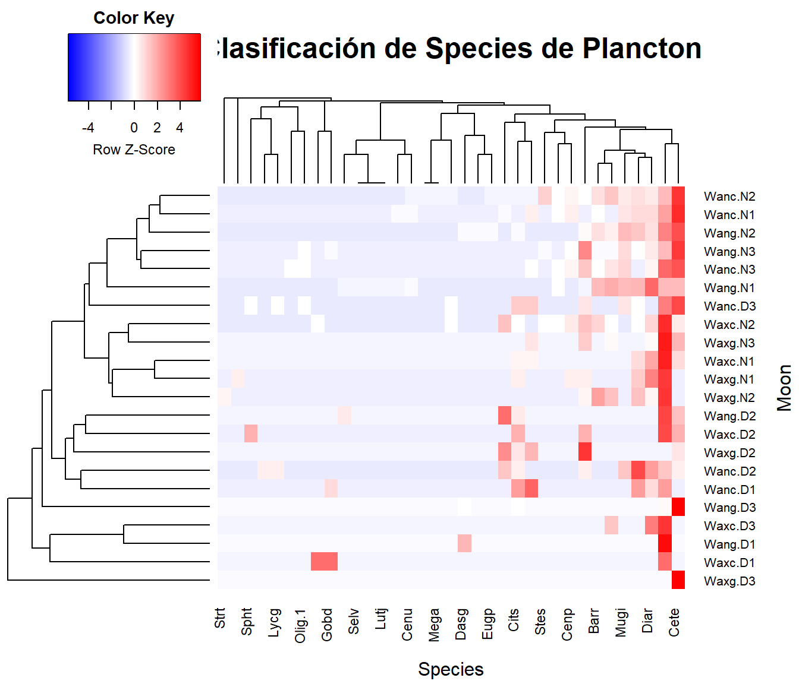

Área de estudio: Zonas del Golfo de Urabá en Colombia.

Resumen
El presente ejercicio consiste en el procesamiento inicial de los datos entregados por los profesores Lenin Florez y Alejandro Sandoval, para dar respuesta al siguiente requerimiento: “Analizar el efecto de cambios en las fases lunares (ciclo lunar - Moon) y horarios de día vs. noche (Time), sobre los patrones de abundancia de peces estuarinos, censados en el Golfo de Urabá y su relación con variables ambientales”.
Estructura de los datos:
Los datos tienen variables categóricas (como Semanas, fases lunares y jornadas día-noche)
Las abundancias de los peces están organizadas por especies.
Variables ambientales, tomadas en los mismos lugares y que pueden estar generando un efecto en la distribución de los peces.
1. Análisis de Componentes Principales (PCA)
Paso 1. Cargar Librerías
Librerías requeridas para el PCA.
Paso 2. Base de datos de los taxones
La Tabla 1 muestra la oranización de los Species de taxones (13), para los diferentes sitios o Moon (6), los Times (2) y los Zones (2).
| Cod | Moon | Time | Zone | Achirus lineatus | Anchovia clupeoides | Ariopsis sp | Bardiela ronchus | Batrachoides surinamensis | Caranx crysos | Caranx hippos | Caranx latus | Cathorops mapale | Centropomus ensiferus | Centropomus pectinatus | Centropomus undecimalis | Cetengraulis edentulus | Chaetodipterus fabel | Citharichthys spilopterus | Dasyatis guttata | Diapterus rhombeus | Epinephelus itajara | Eugerres plumieri | Gerres cinereus | Gobiomorus dormitor | Gymnothorax ocellatus | Lutjanus analis | Lutjanus jocu | Lycengraulis grossidens | Megalops atlanticus | Menticirrhus americanus | Mugil incilis | Oligoplites saliens | Oligoplites saurus | Selene vomer | Sphoeroides testudineum | Stellifer sp | Strongylura timuco | Trichiurus lepturus |
|---|---|---|---|---|---|---|---|---|---|---|---|---|---|---|---|---|---|---|---|---|---|---|---|---|---|---|---|---|---|---|---|---|---|---|---|---|---|---|
| Wanc.D1 | Wan.cres | Day | 1 | 3 | 0 | 2 | 0 | 0 | 0 | 0 | 0 | 2 | 0 | 0 | 0 | 0 | 0 | 2 | 0 | 1 | 0 | 0 | 0 | 1 | 0 | 0 | 0 | 0 | 0 | 0 | 0 | 0 | 0 | 0 | 0 | 0 | 0 | 0 |
| Wanc.D2 | Wan.cres | Day | 2 | 0 | 1 | 2 | 0 | 0 | 0 | 1 | 0 | 5 | 0 | 0 | 0 | 1 | 0 | 1 | 0 | 3 | 0 | 0 | 0 | 0 | 0 | 0 | 0 | 1 | 0 | 0 | 2 | 2 | 0 | 0 | 0 | 0 | 0 | 0 |
| Wanc.D3 | Wan.cres | Day | 3 | 3 | 2 | 6 | 0 | 0 | 0 | 0 | 0 | 1 | 0 | 0 | 0 | 8 | 0 | 3 | 0 | 0 | 0 | 0 | 0 | 0 | 0 | 0 | 0 | 1 | 0 | 1 | 2 | 0 | 1 | 0 | 1 | 0 | 0 | 0 |
| Wanc.N1 | Wan.cres | Night | 1 | 3 | 0 | 10 | 2 | 0 | 0 | 0 | 0 | 5 | 0 | 3 | 1 | 20 | 1 | 0 | 0 | 5 | 0 | 0 | 0 | 0 | 0 | 0 | 0 | 0 | 0 | 0 | 4 | 1 | 0 | 0 | 0 | 0 | 0 | 2 |
| Wanc.N2 | Wan.cres | Night | 2 | 1 | 2 | 8 | 5 | 0 | 0 | 0 | 0 | 5 | 7 | 3 | 1 | 19 | 0 | 1 | 0 | 4 | 1 | 1 | 0 | 0 | 0 | 0 | 0 | 0 | 1 | 1 | 4 | 1 | 0 | 0 | 0 | 6 | 0 | 2 |
| Wanc.N3 | Wan.cres | Night | 3 | 1 | 5 | 11 | 1 | 0 | 0 | 0 | 0 | 0 | 3 | 2 | 0 | 12 | 0 | 0 | 0 | 2 | 0 | 0 | 0 | 0 | 1 | 0 | 0 | 0 | 0 | 0 | 4 | 0 | 1 | 0 | 0 | 0 | 0 | 1 |
Si los nombres de los taxones son demasiado largos, se pueden abreviar con el número de letras que se requiera (ej: minlength = 4), esto para que las figuras que incluyan a los taxones, no queden tan saturadas de texto (?@tbl-tbl2).
| Especies | Abreviaturas |
|---|---|
| Achirus lineatus | Achl |
| Anchovia clupeoides | Ancc |
| Ariopsis sp | Aris |
| Bardiela ronchus | Barr |
| Batrachoides surinamensis | Bats |
| Caranx crysos | Carc |
| Caranx hippos | Carh |
| Caranx latus | Carl |
| Cathorops mapale | Catm |
| Centropomus ensiferus | Cene |
| Centropomus pectinatus | Cenp |
| Centropomus undecimalis | Cenu |
| Cetengraulis edentulus | Cete |
| Chaetodipterus fabel | Chaf |
| Citharichthys spilopterus | Cits |
| Dasyatis guttata | Dasg |
| Diapterus rhombeus | Diar |
| Epinephelus itajara | Epii |
| Eugerres plumieri | Eugp |
| Gerres cinereus | Gerc |
| Gobiomorus dormitor | Gobd |
| Gymnothorax ocellatus | Gymo |
| Lutjanus analis | Luta |
| Lutjanus jocu | Lutj |
| Lycengraulis grossidens | Lycg |
| Megalops atlanticus | Mega |
| Menticirrhus americanus | Mena |
| Mugil incilis | Mugi |
| Oligoplites saliens | Olig |
| Oligoplites saurus | Olig.1 |
| Selene vomer | Selv |
| Sphoeroides testudineum | Spht |
| Stellifer sp | Stes |
| Strongylura timuco | Strt |
| Trichiurus lepturus | Tril |
Variables ambientales + biológiccas: datos
Variables biológicas: biol2, Biológicos Hell: biol2.h
Variables ambientales: amb2
Nota: Llegué hasta aquí, requiero:
- Cargar las figuras de Alejo, para tenerlas de comparación.
2. Escalamiento Multidimensional no Métrico (NMDS)
Se aplicará esta técnica para explorar los gradientes en la ordenación de los sitios o Moon, su relación con los trece Species taxonómicos y las variables ambientales. Se utilizará la distancia Bray Curtis, para la asociación de los datos.
Paso 1. Cargar Librerías
Se ejecutan las librerías necesarias para este análisis.
Paso 2. NMDS
Se utiliza la distancia Bray Curtis y el estrés generado es de 0.17 (17%), denotando una buena configuración para este análisis.
| sitio | NMDS1 | NMDS2 | Moon | Time | Zone |
|---|---|---|---|---|---|
| Wanc.D1 | -0.0291456 | -0.5718580 | Wan.cres | Day | 1 |
| Wanc.D2 | -0.3355544 | -0.1622831 | Wan.cres | Day | 2 |
| Wanc.D3 | -0.0716100 | 0.3099774 | Wan.cres | Day | 3 |
| Wanc.N1 | -0.4937941 | 0.1358198 | Wan.cres | Night | 1 |
| Wanc.N2 | -0.5447319 | 0.1849498 | Wan.cres | Night | 2 |
| Wanc.N3 | -0.2798339 | 0.2273058 | Wan.cres | Night | 3 |
A continuación se extraen las coordenadas de las Moon, Times, Zones, Species taxonómicos y variables ambientales, para ser ordenadas con la librería ggplo2.
L Figura 1, muestra la ordenación del NMDS para las referencias de las Moon, con los Species taxonómicos y las variables ambientales. No se logra apreciar un gradiente claro, aunque las Moon 9, 13 y 15 son las que agrupan mayor cantidad de taxones, asociadas a mayor Temperature y Salinity.
La Figura 2 muestra la diferenciación por Moon, se logra observar un gradiente horizontal, en donde algunas Moon muestran diferencias por sus Species taxonómicos.
La Figura 3 que la composición taxonómica con 250 micras, se encuentra anidada en 500 micras.
Similar a la Figura 3, la Figura 4, muestra ausencia de diferencias en la composición taxonómica entre Zones.
La Figura 5 complementa a la @fi4, al incorporar las variables ambientales en la caracterización de las Moon y de los Species taxonómicos.
3. Análisis de Correspondencia Simple (CA)
En este análisis se explora una propuesta complementaria a la realizada con el NMDS, con la diferencia de que se utilizará a la distancia chi cuadrado, para relacionar a las localidades y a los Species taxonómicos.
Paso 1. Cargar Librerías
Se ejecutan las librerías necesarias para este análisis.
Paso 2. CA con el paquete ggplo2
Se utiliza la distancia Chi Cuadrado con las trece variables biológicas. La varanza capturada por los dos primeros ejes canónicos es de 0.86 (86%).
La Figura 6 no muestra un gradiente muy claro en la caracterización de los Species taxonómicos para las Moon evaluadas.
La Figura 7 tampoco permite visualizar un gradiente claro en la ordenación de los sitios y de los taxones.
4. RDA
Cargar las librerías requeridas
Código
# Librerías requeridas
library(ade4)
library(adegraphics)
library(adespatial)
library(cocorresp)
library(vegan)
library(MASS)
library(ellipse)
library(FactoMineR)
library(rrcov)
library(ggplot2)
library(reshape2)
library(ggrepel)
library(ggforce)
Funciones adicionales (Bordcard et al. 2018)
Código
# Funciones a cargar
source("hcoplot.R")
source("triplot.rda.R")
source("plot.lda.R")
source("polyvars.R")
source("screestick.R")
Ajuste de las bases de datos biológica (tax.hel) y Ambiental (amb)
A continuación se realizará un ajuste de la base de datos, primero convirtiendo a la columna Tributario como un factor, luego transformando a las variables ambientales amb con logaritmo en base 10 y finalmente ajustando a los taxones tax.hel con la transformación de Hellinger. Las abreviaturas en las filas T1.1, ..., T1.6, ... Representan el número del tributario (T1) y el numero de la visita realizada al lugar de muestreo (1).
Código
# Igualar dimensiones de las matrices biológica y ambiental
# Base de datos amb
amb1 <- read_xlsx("datos.eng3.xlsx", "env1")
# Impresión de la base ambiental
amb1 =na.omit(amb1)
# Quito la fila Wax. gibb - Day, porque no está en los biológicos
amb2 = amb1[-20,] # Quitar fila
amb2 = amb2[-c(5)] # Quitar columna hour
# Base biológica
biol1 <- read_xlsx("datos.eng3.xlsx", "Taxa1")
# Abreviar los nombres de las especies, sin abreviar Moom y Time.
biol <- biol1[, c(-1, -2)] %>%
rename_with(~ {
# Generar las abreviaturas y limitar a 4 caracteres
abrev <- abbreviate(., minlength = 4, use.classes = FALSE)
abrev <- substr(abrev, 1, 4) # Limitar a exactamente 4 caracteres
make.unique(abrev) # Asegurarse de que sean únicos
})
# Dataframe definitivo abreviado
biol <-
data.frame(biol1[,1:2],biol)
# Impresión de la base biológica
# Quito la fila Wax.cres - Night, porque no está en las ambientales
biol2 = biol[-18,] Los datos de abundancia de los taxones están en cifras decimales, debido a la transformación logarítmica que se les aplicó.
Código
# Variables biológicas linealizadas - Taxones con Hellinger
rownames(biol2) <- biol2[,1]
tax.hel=decostand(biol2[,-c(1:4)],"hellinger")
round(head(tax.hel),2) Achl Ancc Aris Barr Bats Carc Carh Carl Catm Cene Cenp Cenu Cete Chaf
Wanc.D1 0.52 0.00 0.43 0.00 0 0 0.00 0 0.43 0.00 0.00 0.00 0.00 0.00
Wanc.D2 0.00 0.23 0.32 0.00 0 0 0.23 0 0.51 0.00 0.00 0.00 0.23 0.00
Wanc.D3 0.32 0.26 0.45 0.00 0 0 0.00 0 0.19 0.00 0.00 0.00 0.53 0.00
Wanc.N1 0.23 0.00 0.42 0.19 0 0 0.00 0 0.30 0.00 0.23 0.13 0.59 0.13
Wanc.N2 0.12 0.17 0.33 0.26 0 0 0.00 0 0.26 0.31 0.20 0.12 0.51 0.00
Wanc.N3 0.15 0.34 0.50 0.15 0 0 0.00 0 0.00 0.26 0.21 0.00 0.52 0.00
Cits Dasg Diar Epii Eugp Gerc Gobd Gymo Luta Lutj Lycg Mega Mena Mugi
Wanc.D1 0.43 0 0.30 0.00 0.00 0 0.3 0.00 0 0 0.00 0.00 0.00 0.00
Wanc.D2 0.23 0 0.40 0.00 0.00 0 0.0 0.00 0 0 0.23 0.00 0.00 0.32
Wanc.D3 0.32 0 0.00 0.00 0.00 0 0.0 0.00 0 0 0.19 0.00 0.19 0.26
Wanc.N1 0.00 0 0.30 0.00 0.00 0 0.0 0.00 0 0 0.00 0.00 0.00 0.26
Wanc.N2 0.12 0 0.23 0.12 0.12 0 0.0 0.00 0 0 0.00 0.12 0.12 0.23
Wanc.N3 0.00 0 0.21 0.00 0.00 0 0.0 0.15 0 0 0.00 0.00 0.00 0.30
Olig Olig.1 Selv Spht Stes Strt Tril
Wanc.D1 0.00 0.00 0 0.00 0.00 0 0.00
Wanc.D2 0.32 0.00 0 0.00 0.00 0 0.00
Wanc.D3 0.00 0.19 0 0.19 0.00 0 0.00
Wanc.N1 0.13 0.00 0 0.00 0.00 0 0.19
Wanc.N2 0.12 0.00 0 0.00 0.29 0 0.17
Wanc.N3 0.00 0.15 0 0.00 0.00 0 0.15
Doce pasos para el análisis de redundancia - RDA.
Paso 1. Ordenación de los taxones y las variables ambientales.
En el siguiente analisis se relaciona a la matriz de datos biológicos (abundancia de taxones) con la matriz de datos ambientales. A continuación se determinan los insumos generales del análisis.
Código
# 1. Realización del RDA
tax.rda<-rda(tax.hel ~.,amb2[,-c(1:4)])
tax.rda # Resultados resumidosCall: rda(formula = tax.hel ~ pH + `%OD` + OD + Conduct + TDS + UPS + Temp,
data = amb2[, -c(1:4)])
-- Model Summary --
Inertia Proportion Rank
Total 0.4838 1.0000
Constrained 0.1843 0.3810 7
Unconstrained 0.2995 0.6190 14
Inertia is variance
-- Eigenvalues --
Eigenvalues for constrained axes:
RDA1 RDA2 RDA3 RDA4 RDA5 RDA6 RDA7
0.08748 0.02908 0.02229 0.02075 0.01452 0.00636 0.00387
Eigenvalues for unconstrained axes:
PC1 PC2 PC3 PC4 PC5 PC6 PC7 PC8 PC9 PC10
0.07973 0.05546 0.03768 0.03305 0.02300 0.01980 0.01304 0.01085 0.00844 0.00618
PC11 PC12 PC13 PC14
0.00488 0.00361 0.00215 0.00163 Matriz 1. Partición de la varianza. La inercia restringida es la que define el ajuste (restringida) en la relación entre las dos matrices de variables. Para este caso es de 0.54 (54%). Más adelante se aplicará el R2 de Ezequiel (1930), para encontrar el ajuste sin restricción (ajuste final del RDA). A continuación se muestra el comando para presentar los resultados detallados del RDA.
Matriz 2. Importancia de los componentes. Muestra que se requiere de 10 ejes canónidos (RDA) para explicar el 54% de la varianza explicada por la inercia restringida. La inercia restante se explica por los ejes de los 12 componentes principales PC.
Matriz 3. Species scores, muestra las coordenadas de las especies en los ejes canónicos, de los cuales se graficarán los dos primeros.
Matriz 4. Site scores, Muestra las coordenadas de los sitios
Matriz 5. Site constraints, muestra a las coordenadas de los sitos en el espacio de los taxones.
Matriz 6. Biplot scores, muestra las coordenadas de las variables ambientales.
Código
summary(tax.rda) # Resultados completos
Call:
rda(formula = tax.hel ~ pH + `%OD` + OD + Conduct + TDS + UPS + Temp, data = amb2[, -c(1:4)])
Partitioning of variance:
Inertia Proportion
Total 0.4838 1.000
Constrained 0.1843 0.381
Unconstrained 0.2995 0.619
Eigenvalues, and their contribution to the variance
Importance of components:
RDA1 RDA2 RDA3 RDA4 RDA5 RDA6 RDA7
Eigenvalue 0.08748 0.02908 0.02229 0.02075 0.01452 0.006356 0.003866
Proportion Explained 0.18081 0.06009 0.04607 0.04290 0.03001 0.013137 0.007990
Cumulative Proportion 0.18081 0.24090 0.28697 0.32987 0.35988 0.373019 0.381009
PC1 PC2 PC3 PC4 PC5 PC6 PC7
Eigenvalue 0.07973 0.05546 0.03768 0.03305 0.02300 0.01980 0.01304
Proportion Explained 0.16478 0.11462 0.07787 0.06831 0.04753 0.04091 0.02696
Cumulative Proportion 0.54579 0.66040 0.73828 0.80659 0.85412 0.89503 0.92199
PC8 PC9 PC10 PC11 PC12 PC13
Eigenvalue 0.01085 0.008441 0.006181 0.004884 0.003615 0.002145
Proportion Explained 0.02242 0.017445 0.012775 0.010094 0.007471 0.004434
Cumulative Proportion 0.94442 0.961864 0.974639 0.984733 0.992204 0.996638
PC14
Eigenvalue 0.001627
Proportion Explained 0.003362
Cumulative Proportion 1.000000
Accumulated constrained eigenvalues
Importance of components:
RDA1 RDA2 RDA3 RDA4 RDA5 RDA6 RDA7
Eigenvalue 0.08748 0.02908 0.02229 0.02075 0.01452 0.006356 0.003866
Proportion Explained 0.47456 0.15773 0.12091 0.11259 0.07877 0.034479 0.020971
Cumulative Proportion 0.47456 0.63228 0.75319 0.86578 0.94455 0.979029 1.000000A continuación se muestra una manera de extraer algunos insumos por separado del anterior comando summary(tax.rda). Las coordenadas de los taxonesy de los sitios serán tenidas en cuenta más adelante, para las figuras de ggplot2.
Código
# Matriz 3. Escores o coordenadas de los taxones
species.scores <- summary(tax.rda)$"species"
# Escores o coordenadas de los sitios
site.scores <- summary(tax.rda)$"sites"
# Escores de las variables restringidas
biplot.scores <- summary(tax.rda)$"biplot"
Paso 2. Coeficientes de las variables regresoras (ambientales), en el modelo lineal.
Solo se mostrarán los tres primeros ejes canónicos [,1:3], para facilidad de su interpretación.
Código
round(coef(tax.rda),2)[,1:3] RDA1 RDA2 RDA3
pH 0.01 0.07 -0.11
`%OD` -0.03 -0.01 -0.01
OD -0.03 0.39 0.01
Conduct 0.02 0.03 0.01
TDS -0.08 0.00 -0.09
UPS 0.03 -0.06 -0.01
Temp 0.12 0.12 0.05Se puede pensar en un modelo lineal, que tiene en cuenta a los coeficientes descritos en el primer eje canónico:
Distribución de los taxones de microalgas (Matriz Y) = 0.01(Amonio) – 0.18(Nitrito) + … + 0.06(Temp)
Paso 3. R2 sin ajuste vs. R2 ajustado (Ezequiel 1930)
La nueva inercia no sesgada (sin restricción) calculada con la formula de Ezequiel es de 0.19 o del 19%.
Código
# R^2 sin ajuste (inercia restringida)
(R2 <- RsquareAdj(tax.rda)$r.squared)[1] 0.3810088Código
# R^2 ajustado
(R2adj <- RsquareAdj(tax.rda)$adj.r.squared)[1] 0.07151324
Paso 5. Prueba global del RDA
Esta prueba obtiene un valor p = 0.04296 *, por lo cual se valida que el modelo de regresión múltiple de este RDA presenta un ajuste apropiado ( a pesar de la poca inercia encontrada).
Código
# Prueba global del RDA (dos opciones)
# Ho= no hay relación entre las variables X y las Y
anova(tax.rda, permutations = how(nperm = 1000))Permutation test for rda under reduced model
Permutation: free
Number of permutations: 1000
Model: rda(formula = tax.hel ~ pH + `%OD` + OD + Conduct + TDS + UPS + Temp, data = amb2[, -c(1:4)])
Df Variance F Pr(>F)
Model 7 0.18435 1.2311 0.1319
Residual 14 0.29949 A continuación se muestra que ninguno de los ejes canónicos prsenta significancia para la ordenación de las variables y de las observaciones de este análisis (valor p > 0.05), sin embargo se continuará con el procedimiento.
Código
# Prueba de los ejes canónicos
anova(tax.rda, by = "axis", permutations = how(nperm = 1000))Permutation test for rda under reduced model
Forward tests for axes
Permutation: free
Number of permutations: 1000
Model: rda(formula = tax.hel ~ pH + `%OD` + OD + Conduct + TDS + UPS + Temp, data = amb2[, -c(1:4)])
Df Variance F Pr(>F)
RDA1 1 0.087483 4.0895 0.02797 *
RDA2 1 0.029076 1.3592 0.96204
RDA3 1 0.022290 1.0420 0.99500
RDA4 1 0.020755 0.9702 0.99500
RDA5 1 0.014521 0.6788 0.99700
RDA6 1 0.006356 0.2971 1.00000
RDA7 1 0.003866 0.1807
Residual 14 0.299493
---
Signif. codes: 0 '***' 0.001 '**' 0.01 '*' 0.05 '.' 0.1 ' ' 1
Paso 6. Factor de inflación de la varianza (VIF) del RDA
Código
# Factor de inflación
round(vif.cca(tax.rda), 2) pH `%OD` OD Conduct TDS UPS Temp
1.86 4.71 5.06 3.09 7.17 6.28 1.80 Los resultados están por debajo de un VIF de 10, por lo que todas las variables son importantes para el análisis.
Paso 7. Criterios de selección de variables ambientales (X)
7.1 Forward selection usando forward.sel()
El comando forward.selpermitirá definir a las variables ambientales con importancia para ser relacionadas con los taxones en el RDA. Para este caso define a la Conductividad y a la Velocidad del la Corriente.
Código
# Factor de inflación
forward.sel(tax.hel, amb2[,-c(1:4)], adjR2thresh = R2adj)Testing variable 1
Testing variable 2
Procedure stopped (adjR2thresh criteria) adjR2cum = 0.089829 with 2 variables (> 0.071513) variables order R2 R2Cum AdjR2Cum F pvalue
1 OD 3 0.1031579 0.1031579 0.05831579 2.30047 0.0137.2 Eliminación anticipada (Backward) usando “ordistep()” de vegan
El anterior resultado es validado por esta función ordistep, la cual luego de varias corridas, define a las mismas variables ambientales Conductividad y a la Velocidad del la Corriente, pero incluye a la Temperatura como las significativas para el análisis RDA. Para continuar el ejercicio, a continuación se realizará un nuevo RDA (RDA parsimonioso) con estas tres variables.
Código
# 7.2 Eliminación anticipada (Backward) usando "ordistep()" de vegan
step.backward <- ordistep(tax.rda,permutations = how(nperm = 499))
Start: tax.hel ~ pH + `%OD` + OD + Conduct + TDS + UPS + Temp
Df AIC F Pr(>F)
- OD 1 -12.885 0.4284 0.954
- pH 1 -12.571 0.6359 0.846
- `%OD` 1 -12.628 0.5980 0.822
- UPS 1 -11.848 1.1244 0.352
- Temp 1 -11.709 1.2208 0.236
- TDS 1 -11.608 1.2907 0.228
- Conduct 1 -11.413 1.4265 0.186
Step: tax.hel ~ pH + `%OD` + Conduct + TDS + UPS + Temp
Df AIC F Pr(>F)
- pH 1 -13.883 0.6991 0.748
- UPS 1 -13.229 1.1728 0.264
- Conduct 1 -12.838 1.4622 0.176
- Temp 1 -13.003 1.3397 0.170
- TDS 1 -12.873 1.4363 0.124
- `%OD` 1 -12.410 1.7860 0.062 .
---
Signif. codes: 0 '***' 0.001 '**' 0.01 '*' 0.05 '.' 0.1 ' ' 1
Step: tax.hel ~ `%OD` + Conduct + TDS + UPS + Temp
Df AIC F Pr(>F)
- UPS 1 -14.264 1.2213 0.236
- Temp 1 -14.075 1.3704 0.168
- TDS 1 -13.967 1.4555 0.138
- Conduct 1 -13.684 1.6821 0.116
- `%OD` 1 -13.029 2.2161 0.016 *
---
Signif. codes: 0 '***' 0.001 '**' 0.01 '*' 0.05 '.' 0.1 ' ' 1
Step: tax.hel ~ `%OD` + Conduct + TDS + Temp
Df AIC F Pr(>F)
- Temp 1 -14.476 1.4397 0.150
- TDS 1 -14.374 1.5255 0.142
- Conduct 1 -14.158 1.7083 0.078 .
- `%OD` 1 -13.202 2.5387 0.004 **
---
Signif. codes: 0 '***' 0.001 '**' 0.01 '*' 0.05 '.' 0.1 ' ' 1
Step: tax.hel ~ `%OD` + Conduct + TDS
Df AIC F Pr(>F)
- TDS 1 -15.306 0.9830 0.418
- Conduct 1 -14.612 1.5915 0.140
- `%OD` 1 -13.937 2.2023 0.016 *
---
Signif. codes: 0 '***' 0.001 '**' 0.01 '*' 0.05 '.' 0.1 ' ' 1
Step: tax.hel ~ `%OD` + Conduct
Df AIC F Pr(>F)
- Conduct 1 -14.982 2.1169 0.022 *
- `%OD` 1 -14.819 2.2747 0.016 *
---
Signif. codes: 0 '***' 0.001 '**' 0.01 '*' 0.05 '.' 0.1 ' ' 1
Paso 8. R2 ajustado
Al validar el ajuste del RDA con las dos variables seleccionadas, se obtiene un valor de 0.3 o 30% de ajuste.
Código
# Se define un R^2: 0.3 (30% de relación)
RsquareAdj(step.backward)$r.squared
[1] 0.1779442
$adj.r.squared
[1] 0.09141204#—-
Paso 12. RDA con paquete ggplot2
Se realizará la figura del RDA con el paquete ggplot2, dada su mejor presentación, comparado a las figuras anteriores, realizadas con el paquete vegan. Los siguientes comandos sirven para identificar las coorddenadas de los sitios (“sites”), los taxones (“sp”) y las variables ambientales (“vectors”).
Código
# Insumos del RDA parsimonioso o que resume a las tres variables
rownames(biol2) <- biol2[,1]
amb2 <- data.frame(amb2)
rownames(amb2) <- amb2[,1]
(rda.pars <- rda(tax.hel ~ pH+OD+Conduct+TDS+UPS+Temp, data = amb2)) # RDA resumido.Call: rda(formula = tax.hel ~ pH + OD + Conduct + TDS + UPS + Temp, data =
amb2)
-- Model Summary --
Inertia Proportion Rank
Total 0.4838 1.0000
Constrained 0.1716 0.3546 6
Unconstrained 0.3123 0.6454 15
Inertia is variance
-- Eigenvalues --
Eigenvalues for constrained axes:
RDA1 RDA2 RDA3 RDA4 RDA5 RDA6
0.08068 0.02886 0.02219 0.02067 0.01451 0.00465
Eigenvalues for unconstrained axes:
PC1 PC2 PC3 PC4 PC5 PC6 PC7 PC8 PC9 PC10
0.08186 0.05619 0.04167 0.03376 0.02300 0.02018 0.01308 0.01128 0.00929 0.00621
PC11 PC12 PC13 PC14 PC15
0.00516 0.00390 0.00313 0.00215 0.00143 Código
names(summary(rda.pars)) # Insumos del RDA parsimonioso [1] "species" "sites" "constraints" "biplot" "call"
[6] "tot.chi" "constr.chi" "unconst.chi" "cont" "concont"
[11] "scaling" "digits" "inertia" "method"
12.1 Coordenadas de los sitios y el factor “coord.sit”
Código
# 1) Coordenadas de los sitios y el factor (coord.sit)
coord.sit <- as.data.frame(summary(rda.pars)$"sites"[,1:2]) # Coordenadas de los sitios
coord.sit$sitio <- rownames(coord.sit) # Crear una columna con nombres de los sitios
coord.sit$grp <- amb2$Moon # Adicionar columna de grupos por Tributario
head(coord.sit) # vista resumida de las coordenadas de sitios RDA1 RDA2 sitio grp
Wanc.D1 0.58911795 -0.1440437 Wanc.D1 Wan.cres
Wanc.D2 -0.05035445 0.2334305 Wanc.D2 Wan.cres
Wanc.D3 -0.28544454 -0.5672835 Wanc.D3 Wan.cres
Wanc.N1 -0.41938633 0.2181309 Wanc.N1 Wan.cres
Wanc.N2 -0.44724903 0.3753993 Wanc.N2 Wan.cres
Wanc.N3 -0.32782470 0.1723011 Wanc.N3 Wan.cres
12.2 Coordenadas de los taxones “coord.tax”
Código
# 2) Coordenadasde las especies (coord.tax)
coord.tax <- as.data.frame(summary(rda.pars)$"species"[,1:2]) # Dos primeros ejes
coord.tax$especies <- rownames(coord.tax) # Insertar columna con nombres de las especies
head(coord.tax) RDA1 RDA2 especies
Achl 0.060537525 -0.062888083 Achl
Ancc -0.034366557 -0.052361878 Ancc
Aris 0.245373795 0.046613637 Aris
Barr -0.112650221 0.047414463 Barr
Bats -0.019716646 0.008681567 Bats
Carc -0.008684735 0.009325004 Carc
12.3 Coordenadas de las ambientales “coord.amb”
Código
# 3) Coordenadasde las especies (coord.tax)
amb1 <- envfit(tax.rda, amb2[,-c(1:4)]) # Se pueden seleccionar variables con, p.max = 0.05
coord.amb = as.data.frame(summary(rda.pars)$"biplot"[,1:2])
coord.amb$amb <- rownames(coord.amb) # Insertar columna con nombres de las ambientales
coord.amb = coord.amb # La 3 variables seleccionadas
head(coord.amb) RDA1 RDA2 amb
pH -0.1643328 0.66097941 pH
OD -0.6672741 0.56968533 OD
Conduct 0.5435740 0.36341066 Conduct
TDS 0.2837953 0.01677601 TDS
UPS 0.4663303 -0.18271086 UPS
Temp 0.4975694 0.31571654 Temp
12.4 Figura del RDA con vectores de especies
Código
ggplot() +
# Sitios
geom_text_repel(data = coord.sit,aes(RDA1,RDA2,label=row.names(coord.sit)),
size=3)+ # Muestra el cuadro de la figura
geom_point(data = coord.sit,aes(RDA1,RDA2,colour=grp),size=4)+
scale_shape_manual(values = c(21:25))+
# Taxones
geom_segment(data = coord.tax,aes(x = 0, y = 0, xend = RDA1*2, yend = RDA2*2),
arrow = arrow(angle=22.5,length = unit(0.25,"cm"),
type = "closed"),linetype=1, size=0.6,colour = "red")+
geom_text_repel(data = coord.tax,aes(RDA1*2,RDA2*2,label=especies),colour = "red")+
geom_hline(yintercept=0,linetype=3,size=1) +
geom_vline(xintercept=0,linetype=3,size=1)+
guides(shape=guide_legend(title=NULL,color="black"),
fill=guide_legend(title=NULL))+
theme_bw()+theme(panel.grid=element_blank())
12.6 Figura con vectores de especies y ambientales
Código
ggplot() +
# Factor
geom_mark_ellipse(data=coord.sit, aes(x=RDA1,y=RDA2,fill=grp,group=grp),alpha=0.10) +
# Sitios
geom_text_repel(data = coord.sit,aes(RDA1,RDA2,label=row.names(coord.sit)),
size=3)+ # Muestra el cuadro de la figura
geom_point(data = coord.sit,aes(RDA1,RDA2,colour=grp),size=4)+
scale_shape_manual(values = c(21:25))+
# especies
geom_segment(data = coord.tax,aes(x = 0, y = 0, xend = RDA1, yend = RDA2),
arrow = arrow(angle=0,length = unit(0,"cm"),
type = "closed"),linetype=0, size=0,colour = "red")+
geom_text_repel(data = coord.tax,aes(RDA1,RDA2,label=especies),colour = "red")+
# Ambiental
geom_segment(data = coord.amb,aes(x = 0, y = 0, xend = RDA1, yend = RDA2),
arrow = arrow(angle=22.5,length = unit(0.25,"cm"),
type = "closed"),linetype=1, size=0.6,colour = "blue")+
geom_text_repel(data = coord.amb,aes(RDA1,RDA2,label=row.names(coord.amb)),colour = "#00abff")+
geom_hline(yintercept=0,linetype=3,size=1) +
geom_vline(xintercept=0,linetype=3,size=1)+
guides(shape=guide_legend(title=NULL,color="black"),
fill=guide_legend(title=NULL))+
theme_bw()+theme(panel.grid=element_blank())4. Bioenv
Código
# Igualar dimensiones de las matrices biológica y ambiental
# Base de datos amb
amb1 <- read_xlsx("datos.eng3.xlsx", "env1")
# Impresión de la base ambiental
amb1 =na.omit(amb1)
# Quito la fila Wax. gibb - Day, porque no está en los biológicos
amb2 = amb1[-20,] # Quitar fila
amb2 = amb2[-c(5)] # Quitar columna hour
# Base biológica
biol1 <- read_xlsx("datos.eng3.xlsx", "Taxa1")
# Abreviar los nombres de las especies, sin abreviar Moom y Time.
biol <- biol1[, c(-1, -2)] %>%
rename_with(~ {
# Generar las abreviaturas y limitar a 4 caracteres
abrev <- abbreviate(., minlength = 4, use.classes = FALSE)
abrev <- substr(abrev, 1, 4) # Limitar a exactamente 4 caracteres
make.unique(abrev) # Asegurarse de que sean únicos
})
# Dataframe definitivo abreviado
biol <-
data.frame(biol1[,1:2],biol)
# Impresión de la base biológica
# Quito la fila Wax.cres - Night, porque no está en las ambientales
biol2 = biol[-18,] TDS y UPS son las que mejor se correlacionan con la diversidad de peces
Código
bioenv <- bioenv(biol2[,-c(1:4)] ~ pH + OD + Conduct +
TDS + UPS + Temp, amb2)
bioenv
Call:
bioenv(formula = biol2[, -c(1:4)] ~ pH + OD + Conduct + TDS + UPS + Temp, data = amb2)
Subset of environmental variables with best correlation to community data.
Correlations: spearman
Dissimilarities: bray
Metric: euclidean
Best model has 2 parameters (max. 6 allowed):
TDS UPS
with correlation 0.1847841 Código
## IGNORE_RDIFF_BEGIN
summary(bioenv) size correlation
UPS 1 0.1616
TDS UPS 2 0.1848
Conduct TDS UPS 3 0.1632
OD Conduct TDS UPS 4 0.1479
pH OD Conduct TDS UPS 5 0.0821
pH OD Conduct TDS UPS Temp 6 -0.0019
5. Análisis de Clúster (CLA)
Este análisis fue solicitado por los evaluadores, basado en la Abundance de los trece Species taxonómicos, se pretende clasificar a las localidades en Species y compararlos con las Moon del estudio.
Cargar Librerías
Se cargan las librerías requeridas para el análisis.
Paso 1. Distancia entre observaciones
Se aplicará la distancia Bray Curtis para las variables biológicas, dada la poca linealidad en sus relaciones.
Paso 2. Elección del método de agrupación de mayor ajuste
2.1 Cálculo de los siete dendogramas
2.2 Cálculo de las correlaciones cofenéticas
El método de agrupación UPGMA es el que presentó el mejor ajuste cofenético.
| Met | Cofen | |
|---|---|---|
| upgma | 3 | 0.833 |
| upgmc | 4 | 0.828 |
| simple | 1 | 0.813 |
| wpgma | 5 | 0.798 |
| compl | 2 | 0.745 |
| wpgmc | 6 | 0.721 |
| ward | 7 | 0.475 |
Paso 3. Número de Species formados
3.1 Método de silueta
Esta ténica muestra que la mayor amplitud se presenta en la formación de diez Species o clúester, que reunen a las observaciones clasificadas.
[1] 2 Silueta-Número óptimo de Clusters k= 2
Con una aplitud promedio de silueta 0.2901447 3.3 Dendograma jerárquico final
Dendograma generado con el método upgma, la distancia Bray y los tres Species formados.
3.4 Dendograma no jerárquico final
| grp | Achl | Ancc | Aris | Barr | Bats | Carc | Carh | |
|---|---|---|---|---|---|---|---|---|
| Wanc.D1 | 1 | 0.5222330 | 0.0000000 | 0.4264014 | 0.0000000 | 0 | 0 | 0.0000000 |
| Wanc.D2 | 1 | 0.0000000 | 0.2294157 | 0.3244428 | 0.0000000 | 0 | 0 | 0.2294157 |
| Wanc.D3 | 1 | 0.3216338 | 0.2626129 | 0.4548588 | 0.0000000 | 0 | 0 | 0.0000000 |
| Wanc.N1 | 1 | 0.2294157 | 0.0000000 | 0.4188539 | 0.1873172 | 0 | 0 | 0.0000000 |
| Wanc.N2 | 1 | 0.1170411 | 0.1655212 | 0.3310424 | 0.2617120 | 0 | 0 | 0.0000000 |
| Wanc.N3 | 1 | 0.1507557 | 0.3370999 | 0.5000000 | 0.1507557 | 0 | 0 | 0.0000000 |
Paso 4. Aporte de las variables a la clasificación
En rojo se identifica a los Species taxonómicos que por su patrón de Abundance, aportan a la clasificación de los sitios.

Para este caso, el aporte de los taxones se da para las Moon.
6. Análisis Discriminante Lineal (LDA)
Este análisis se realiza para intentar optimizar la separación de las Moon, por la información de las Abundances de los diferentes Species taxonómicos. Se incorpora a la variante de discriminante canónico, para analizar el aporte de los taxones en la clasificación.
Cargar Librerías
Se cargan diferentes librerías requeridas para el lda.
La ?@tbl-tbl6, es la misma ?@tbl-tbl6 utilizada para la mayoría de los análisis anteriores.
| Cod | Moon | Time | Zone | Achl | Ancc | Aris | Barr | Bats | Carc | Carh | Carl | Catm | Cene | Cenp | Cenu | Cete | Chaf | Cits | Dasg | Diar | Epii | Eugp | Gerc | Gobd | Gymo | Luta | Lutj | Lycg | Mega | Mena | Mugi | Olig | Olig.1 | Selv | Spht | Stes | Strt | Tril |
|---|---|---|---|---|---|---|---|---|---|---|---|---|---|---|---|---|---|---|---|---|---|---|---|---|---|---|---|---|---|---|---|---|---|---|---|---|---|---|
| Wanc.D1 | Wan.cres | Day | 1 | 3 | 0 | 2 | 0 | 0 | 0 | 0 | 0 | 2 | 0 | 0 | 0 | 0 | 0 | 2 | 0 | 1 | 0 | 0 | 0 | 1 | 0 | 0 | 0 | 0 | 0 | 0 | 0 | 0 | 0 | 0 | 0 | 0 | 0 | 0 |
| Wanc.D2 | Wan.cres | Day | 2 | 0 | 1 | 2 | 0 | 0 | 0 | 1 | 0 | 5 | 0 | 0 | 0 | 1 | 0 | 1 | 0 | 3 | 0 | 0 | 0 | 0 | 0 | 0 | 0 | 1 | 0 | 0 | 2 | 2 | 0 | 0 | 0 | 0 | 0 | 0 |
| Wanc.D3 | Wan.cres | Day | 3 | 3 | 2 | 6 | 0 | 0 | 0 | 0 | 0 | 1 | 0 | 0 | 0 | 8 | 0 | 3 | 0 | 0 | 0 | 0 | 0 | 0 | 0 | 0 | 0 | 1 | 0 | 1 | 2 | 0 | 1 | 0 | 1 | 0 | 0 | 0 |
| Wanc.N1 | Wan.cres | Night | 1 | 3 | 0 | 10 | 2 | 0 | 0 | 0 | 0 | 5 | 0 | 3 | 1 | 20 | 1 | 0 | 0 | 5 | 0 | 0 | 0 | 0 | 0 | 0 | 0 | 0 | 0 | 0 | 4 | 1 | 0 | 0 | 0 | 0 | 0 | 2 |
| Wanc.N2 | Wan.cres | Night | 2 | 1 | 2 | 8 | 5 | 0 | 0 | 0 | 0 | 5 | 7 | 3 | 1 | 19 | 0 | 1 | 0 | 4 | 1 | 1 | 0 | 0 | 0 | 0 | 0 | 0 | 1 | 1 | 4 | 1 | 0 | 0 | 0 | 6 | 0 | 2 |
| Wanc.N3 | Wan.cres | Night | 3 | 1 | 5 | 11 | 1 | 0 | 0 | 0 | 0 | 0 | 3 | 2 | 0 | 12 | 0 | 0 | 0 | 2 | 0 | 0 | 0 | 0 | 1 | 0 | 0 | 0 | 0 | 0 | 4 | 0 | 1 | 0 | 0 | 0 | 0 | 1 |
Se vuelve a mostrar la resolución de los taxones y de las variables ambientales para clasificar a las Moon o sitios de muestreo.
Código
# Base de datos amb
amb1 <- read_xlsx("datos.eng3.xlsx", "env1")
# Impresión de la base ambiental
amb1 =na.omit(amb1)
# Quito la fila Wax. gibb - Day, porque no está en los biológicos
amb2 = amb1[-20,] # Quitar fila
amb2 = amb2[-c(5)] # Quitar columna hour
Paso 1. selección de una muestra aleatoria para el lda
División de los datos en conjuntos de entrenamiento y prueba. Se recomienda estandarizar o normalizar las variables predictoras (Abundances de taxones) para que no haya un efecto de la escala. Algunos autores recomiendan dividir los datos de entrenamiento en un 60% y los datos de la prueba en 40% FINNSTATS o datos de entrenamiento en un 80% y los de prueba en un 20%. STHDA. Se utilizará la segunda propuesta para este ejercicio.
1. División de los datos en conjuntos de entrenamiento y prueba
Nota: No se realizarà el lda con especies, porque las matrices son singulares y hay cilinealidad en algunas variables.
- Normalizar los datos. Las variables categóricas (Moon) se ignoran automáticamente.
Paso 2. Supuestos de normalidad y homogeneidad de covarianzas
Supuesto 1. Normalidad multivariada
Este es uno de los requisitos que deben presentar los datos, para utilizar al lda como un modelo lineal. En caso de que no se cumpla este supuesto o no se pueda ejecutar, puede usarse el lda como un análisis exploratorio.
Se corrió el diagnóstico de normalidad multivariada para cada Moon, pero las muestras son matrices singulares, todas las matrices son singulares, impidiendo la ejecución del procedimiento.
Supuesto 2. Homogeneidad de covarianzas (esfericidad)
Se realizaron dos anovas permutacionales, las cuales permitieron demostrar que se cumple el supuesto de homogeneidad de covarianzas (valor p es mayor a 0.05).
Analysis of Variance Table
Response: Distances
Df Sum Sq Mean Sq F value Pr(>F)
Groups 3 4.5893 1.5298 1.1406 0.3668
Residuals 14 18.7773 1.3412
Permutation test for homogeneity of multivariate dispersions
Permutation: free
Number of permutations: 999
Response: Distances
Df Sum Sq Mean Sq F N.Perm Pr(>F)
Groups 3 4.5893 1.5298 1.1406 999 0.377
Residuals 14 18.7773 1.3412
Paso 3. Análisis discriminante lineal de Fisher
Se analizará el desempeño del modelo discriminante lineal, para clasificar a las seis Moon, basado en las Abundances de los Species taxonómicos.
Wan.cres Wan.gibb Wax. gibb Wax.cres
0.28 0.28 0.22 0.22 La función de desempeño, genera la siguiente tabla de contingencia, en la que a excepción de la Moon 2 (la más diferente), muestra una mezcla de observaciones que no permiten diferenciar claramente a la Moon, eso se da por la similitud en la composición y Abundance de los Species taxonómicos entre Moon.
group
Moon Wan.cres Wan.gibb Wax. gibb Wax.cres
Wan.cres 5 0 0 0
Wan.gibb 0 5 0 0
Wax. gibb 0 1 3 0
Wax.cres 0 0 1 3El siguiente resultado muestra el porcentaje de acierto en la clasificación de las Moon, el cual es bajo en la mayoría de los casos.
Wan.cres Wan.gibb Wax. gibb Wax.cres
100 100 75 75
Paso 4. Visualización grafica del LDA
Se utilizará el paquete ggplot2 como se ha venido empleando en las diferentes técnicas, debido a su buen nivel de resolución para visualizar patrones en los datos.
La siguiente figura corrobora la separación de la Moon 2, debido a su diferencia en la composición y Abundance de taxones encontrados. El resto de localidades presentan una mezcla o mayor similitud taxonómica.
El siguiente análisis discriminante canónico, permite demostrar que la diferencia de la Moon 2, se debe a la composición y Abundance de taxones como Srgs, Lcfr, Lrdp y Hvdp.
7. Manovas - Species Taxonómicos de biol2
El siguiente manova se emplea para probar la hipótesis de diferencias entre las Moon, de acuerdo a la Abundance y composición de los Species taxonómicos. Como es un modelo lineal paramétrico, se deben probar los supuestos paramétricos encontrando que no se cumple la normalidad multivariada de los residuales, por lo cual, posteriormente se realizaran permanovas que no requieren este supuesto.
Paso 1. Análisis de Varinaza Multivariado - MANOVA
1.1 Respuesta de cada variable a las diferencias entre Moon
[1] "Cod" "Moon" "Time" "Zone" "pH" "X.OD" "OD"
[8] "Conduct" "TDS" "UPS" "Temp" solo la temperatura y TDS marcan diferencias para Moon (valor p < 0,05)
| Variable | p.Moon | p.Time |
|---|---|---|
| pH | 0.4574 | 0.3792 |
| X.OD | 0.0309 | 0.0387 |
| OD | 0.2254 | 0.1485 |
| Conduct | 0.0492 | 0.4676 |
| TDS | 0.0435 | 0.8868 |
| UPS | 0.0456 | 0.6437 |
| Temp | 0.0008 | 0.0772 |
1.2 Cuatro tipos de MANOVA
Solo el test de Roy muestra diferencias significativas en la Abundancia y composición para Moon (valor p < 0.05)
Df Pillai approx F num Df den Df Pr(>F)
Moon 3 1.82392 1.9940 21 27 0.04604 *
Time 1 0.70028 2.3364 7 7 0.14269
Residuals 13
---
Signif. codes: 0 '***' 0.001 '**' 0.01 '*' 0.05 '.' 0.1 ' ' 1 Df Wilks approx F num Df den Df Pr(>F)
Moon 3 0.036827 2.1215 21 20.65 0.04711 *
Time 1 0.299722 2.3364 7 7.00 0.14269
Residuals 13
---
Signif. codes: 0 '***' 0.001 '**' 0.01 '*' 0.05 '.' 0.1 ' ' 1 Df Hotelling-Lawley approx F num Df den Df Pr(>F)
Moon 3 7.3829 1.9922 21 17 0.07677 .
Time 1 2.3364 2.3364 7 7 0.14269
Residuals 13
---
Signif. codes: 0 '***' 0.001 '**' 0.01 '*' 0.05 '.' 0.1 ' ' 1 Df Roy approx F num Df den Df Pr(>F)
Moon 3 4.4009 5.6582 7 9 0.009738 **
Time 1 2.3364 2.3364 7 7 0.142686
Residuals 13
---
Signif. codes: 0 '***' 0.001 '**' 0.01 '*' 0.05 '.' 0.1 ' ' 11.3. Supuesto de normalidad de los residuales del MANOVA
No se cumple el supuesto de normalidad multivariada sobre los residuales del Manova (W = 0.65, p-value = 2.8e-06). En este sentido, el MANOVA no puede ser utilizado para probar diferencias entre la Moon.
Shapiro-Wilk normality test
data: Z
W = 0.68385, p-value = 5.213e-051.4. Supuesto de independencia
Se cumple este supuesto (valor p > 0.05).
lag Autocorrelation D-W Statistic p-value
1 -0.4218554 2.660431 0.324
Alternative hypothesis: rho != 0 lag Autocorrelation D-W Statistic p-value
1 0.1017075 1.715878 0.474
Alternative hypothesis: rho != 0
Permanova - Ambientales. Permanova de dos factores (a 2 vías)
De acuerdo a la teoría, esta prueba suele ser más robsta que el anosim, para encontrar diferencias entre los Species en comparación.
Paso 1. Disancia entre observaciones (Hellinger para este caso)
Distancia Bray para ambientales
Paso 2. Prueba de hipótesis de igualdad de medias multivariadas
Se presentan diferencias entre las Moon similar al anosim (Seudo F= 2.73; g.l.= 5, 18; p= 0.012).
Permutation test for adonis under reduced model
Permutation: free
Number of permutations: 1000
adonis2(formula = d.amb ~ amb2$Moon + amb2$Time, permutations = 1000)
Df SumOfSqs R2 F Pr(>F)
Model 4 0.023156 0.36979 2.4938 0.01199 *
Residual 17 0.039464 0.63021
Total 21 0.062620 1.00000
---
Signif. codes: 0 '***' 0.001 '**' 0.01 '*' 0.05 '.' 0.1 ' ' 1No hay efectos de las variables.
Permutation: free
Number of permutations: 1000
Terms added sequentially (first to last)
Df SumsOfSqs MeanSqs F.Model R2 Pr(>F)
pH 1 0.005158 0.0051576 189.09 0.08236 0.000999 ***
X.OD 1 0.013476 0.0134762 494.08 0.21520 0.000999 ***
OD 1 0.011578 0.0115780 424.48 0.18489 0.000999 ***
Conduct 1 0.023103 0.0231030 847.02 0.36894 0.000999 ***
TDS 1 0.006065 0.0060649 222.36 0.09685 0.000999 ***
UPS 1 0.002072 0.0020724 75.98 0.03309 0.000999 ***
Temp 1 0.000787 0.0007866 28.84 0.01256 0.000999 ***
Residuals 14 0.000382 0.0000273 0.00610
Total 21 0.062620 1.00000
---
Signif. codes: 0 '***' 0.001 '**' 0.01 '*' 0.05 '.' 0.1 ' ' 1
Permanova - Biológicas. Permanova de dos factores (a 2 vías)
De acuerdo a la teoría, esta prueba suele ser más robsta que el anosim, para encontrar diferencias entre los Species en comparación.
Paso 1. Disancia entre observaciones (Hellinger para este caso)
Distancia Bray para ambientales
Paso 2. Prueba de hipótesis de igualdad de medias multivariadas
Se presentan diferencias entre las Moon similar al anosim (Seudo F= 2.73; g.l.= 5, 18; p= 0.012).
Permutation test for adonis under reduced model
Permutation: free
Number of permutations: 1000
adonis2(formula = d.tax ~ amb2$Moon + amb2$Time, permutations = 1000)
Df SumOfSqs R2 F Pr(>F)
Model 4 1.2578 0.29539 1.7817 0.01598 *
Residual 17 3.0003 0.70461
Total 21 4.2581 1.00000
---
Signif. codes: 0 '***' 0.001 '**' 0.01 '*' 0.05 '.' 0.1 ' ' 1No uso todas las especies, para que genere un valor de p.
Permutation test for adonis under reduced model
Permutation: free
Number of permutations: 1000
adonis2(formula = d.tax ~ Achl + Ancc + Aris + Barr + Bats + Carc + Carh + Carl + Catm + Cene + Cenp + Cenu + Cete + Chaf + Cits + Dasg + Diar + Epii + Eugp + Gerc, permutations = 1000)
Df SumOfSqs R2 F Pr(>F)
Model 18 3.9417 0.9257 2.0764 0.02597 *
Residual 3 0.3164 0.0743
Total 21 4.2581 1.0000
---
Signif. codes: 0 '***' 0.001 '**' 0.01 '*' 0.05 '.' 0.1 ' ' 1